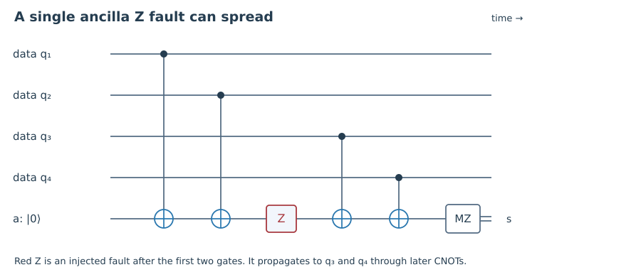
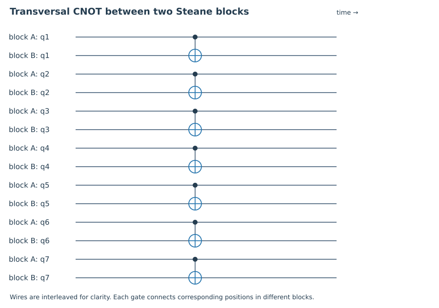
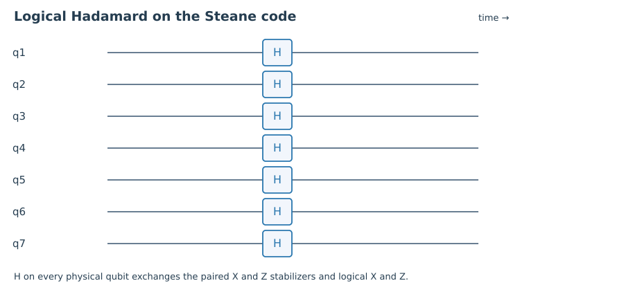

1. Quick check §
Which Pauli propagates from target to control through CNOT?
Hint 1
Use conjugation by CNOT.
Worked solution
Z on the target becomes Z on both target and control. X on the target stays on the target.
Chapter 08 · Draft lesson
What prevents the correction machinery itself from creating an uncorrectable error?
Starting point: Chapters 1–7; CNOT propagation, distance, and syndrome circuits.
Anchor example: An ancilla fault in a parity circuit and a transversal CNOT between encoded blocks.
Method: Track faults through gates and distinguish logical implementation from fault containment.
Watch for: A circuit implementing the correct ideal logical operation is not automatically fault tolerant.
This lesson includes explanations, worked examples, and problems with solutions. Advanced results whose proofs are outside the chapter are identified explicitly.
We built recovery circuits to remove errors. But every added gate is another opportunity for an error to occur. A particularly unfortunate ancilla fault might spread to several data qubits before the ancilla is measured. If one physical fault can defeat the code, simply repeating correction more often may make the machine worse. Fault tolerance is the discipline of designing the machinery so that faults remain within a controlled budget.
Let U be CNOT with control c and target t. Moving a Pauli fault from before the gate to after it means replacing P by UPU†. Direct action on computational basis states gives
\[X_c\mapsto X_cX_t,\quad Z_c\mapsto Z_c,\quad X_t\mapsto X_t,\quad Z_t\mapsto Z_cZ_t.\]An X error propagates from control to target; a Z error propagates from target to control. The gate is not a one-way conduit for every kind of error. Y components follow by multiplication, with any resulting overall phase irrelevant to the error action.
Return to the Z-parity circuit, whose ancilla is the target of several CNOTs. A Z fault on the ancilla can propagate to later data controls. When measuring a weight-four check, a fault partway through can create a pair of data Z errors. The full four-qubit Z string may be a stabilizer, but a partial string need not be harmless. This is a hook error: the schedule and orientation matter.
Not every single-fault scenario has the same effect. An X fault on that target ancilla does not propagate to controls through later CNOTs, though it can flip the final measurement result. A fault model that only flips recorded syndrome bits misses the dangerous back-propagating Z case. Circuit-level analysis must include preparation, gates, idle intervals, and measurement faults.

Worked check 8.1. A target ancilla acquires Z just before interacting with two more data controls. What data error can result?
Each subsequent CNOT copies the Z component backward onto its data control. The final operator includes Z on both remaining data qubits, as well as the ancilla. Those two data errors arise from one ancilla fault.
A transversal operation couples at most one qubit from each code block in each elementary gate. For example, apply CNOT between corresponding positions of two Steane blocks. A fault in one such gate can affect one physical qubit in each block, but it cannot directly spread to a second position in the same block. This locality of propagation is why transversality is useful.
We must also check that the ideal operation acts correctly on the encoded information. For identical CSS blocks, an X stabilizer in the control block maps to the product of the corresponding X stabilizers in both blocks. A Z stabilizer in the target maps to the product of the corresponding Z stabilizers. Other generators remain in their original block. Thus the joint code space is preserved. Logical X and Z strings transform by the same CNOT conjugation rules, proving an encoded CNOT.
Likewise, H⊗⁷ on the Steane code exchanges each X check with the corresponding Z check and exchanges logical X with logical Z. It implements logical Hadamard. These are two separate arguments: stabilizer and logical-operator tracking establish the ideal logical action; locality of the physical implementation bounds error spread.
Transversality alone does not make an entire computation reliable. Pre-existing errors can propagate between blocks, error correction can fail, and the noise may violate locality assumptions. A full fault-tolerance proof budgets incoming errors and internal faults together. For a distance-three construction, the basic target is that a single fault on otherwise valid inputs must not create an uncorrectable data error within a block.


Worked check 8.2. What happens to a pre-existing X on one control-block qubit under transversal CNOT?
It remains at that control position and also appears at the corresponding target position. Each block has one affected position. This spread between blocks is controlled, but must be included in the next correction step’s error budget.
How can we prevent a shared ancilla from spreading a dangerous error? One route uses an encoded or multi-qubit ancilla so that each ancilla component touches only one data position, with verification to detect dangerous preparation faults. Another uses flag ancillas: an extra outcome warns that a fault could have spread beyond the usual weight, allowing a decoder to consider the corresponding correlated patterns.
A flag is not a correction by itself. The full syndrome-and-flag record must distinguish every harmful logical class permitted by the chosen fault budget. Similarly, repeating a syndrome measurement can protect against a wrong recorded bit but does not automatically repair correlated data errors that the measurement circuit created. Each method needs a circuit-specific proof.
A useful audit for a distance-three gadget is to enumerate each location at which one fault may occur, propagate representative Pauli components through the remaining Clifford circuit, and group cases by the observable record. For cases sharing a record, verify that the proposed correction leaves only an allowed residual error and does not create an ambiguous logical action. Also check propagation of one incoming data error through a fault-free gadget. Composing these properties requires a consistent treatment of which neighboring correction steps belong to each logical operation.
The general theory, including stronger multi-fault conditions and composition into arbitrarily long computations, is developed in Gottesman’s fault-tolerance lectures. Here we have identified what must be verified, not certified an unspecified flag circuit. Next we face another limitation: the safest gates do not automatically supply every logical operation we need.
Worked check 8.3. Why is “the flag clicks whenever an ancilla fails” neither necessary nor sufficient as a design claim?
Not every ancilla fault is harmful, so flagging all of them is unnecessary. A click also does not identify a unique correction. What matters is that each syndrome-and-flag record supports a safe recovery for all faults compatible with it, under the declared fault budget.
These exercises draw on the whole chapter. Attempt each question before opening a hint, explain your reasoning, then compare it with the worked solution.
Which Pauli propagates from target to control through CNOT?
Use conjugation by CNOT.
Z on the target becomes Z on both target and control. X on the target stays on the target.
What distinguishes a transversal gate?
Count touched positions inside each code block.
Each elementary coupling touches at most one physical position per block, limiting within-block propagation from a single gate fault.
Propagate Y on a CNOT control.
Use Y=iXZ and the two control rules.
Up to overall phase, it becomes Y on the control and X on the target.
Propagate X on control and Z on target simultaneously.
Conjugate their product carefully.
The resulting Pauli is, up to phase, Y on both qubits. Each input component spreads according to its own direction.
Explain why H⊗⁷ preserves the Steane stabilizer group.
The X and Z check matrices coincide.
Hadamard exchanges X and Z on every position, taking each X generator to its paired Z generator and vice versa. The common +1 space is preserved.
Track a target-block logical Z through encoded CNOT.
Use the physical rule at each support position.
It maps to logical Z on both blocks. A control logical X similarly maps to logical X on both blocks, matching a logical CNOT.
Why can repeating a faulty check fail to undo a hook error?
Separate a wrong report from a damaged data state.
The repeated check may correctly report the syndrome of correlated data damage already created. If that damage is logically ambiguous under the decoder model, repetition alone does not fix it.
Does a correct ideal encoded gate automatically satisfy fault tolerance?
Consider a circuit that fans one error through a block.
No. Its fault-free logical action can be correct while a single physical fault spreads to an uncorrectable pattern.
Are hook errors always logical failures?
Consider their geometry and the code’s equivalence classes.
No. Some are harmless or recoverable. Their danger depends on the code, schedule, record, and decoder; circuit-level analysis must determine it.
Specify a bounded one-fault audit for a proposed syndrome gadget.
List locations, fault components, records, and residual actions.
Enumerate preparation, gate, idle, and measurement faults from the declared model; propagate them; collect syndrome and flag records; apply the candidate decoder; and test logical equivalence of residuals. Report assumptions and any ambiguous record rather than inferring safety from ideal behavior.